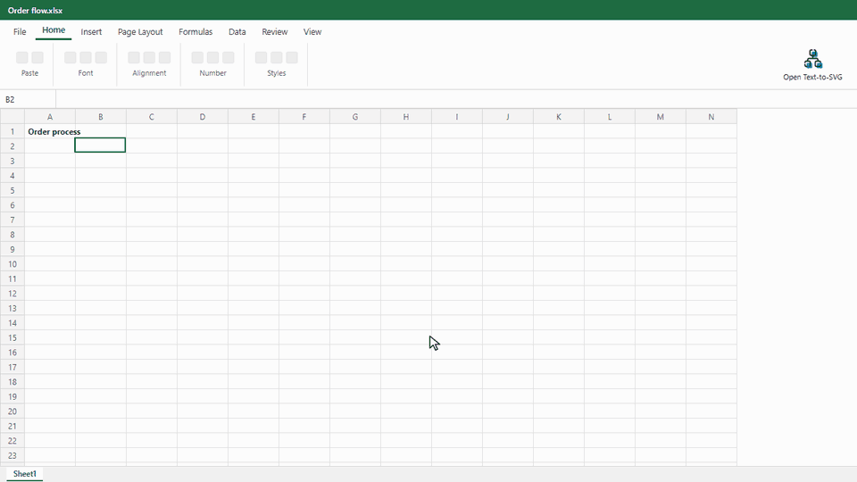
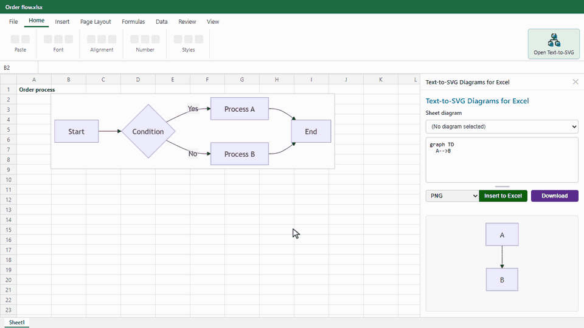
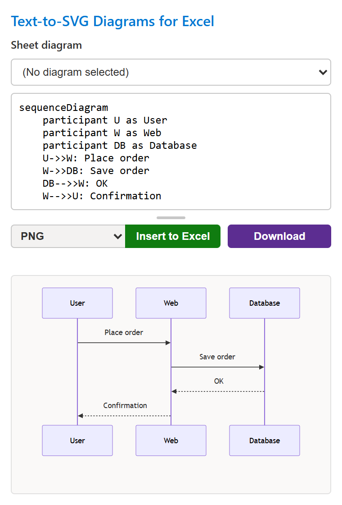
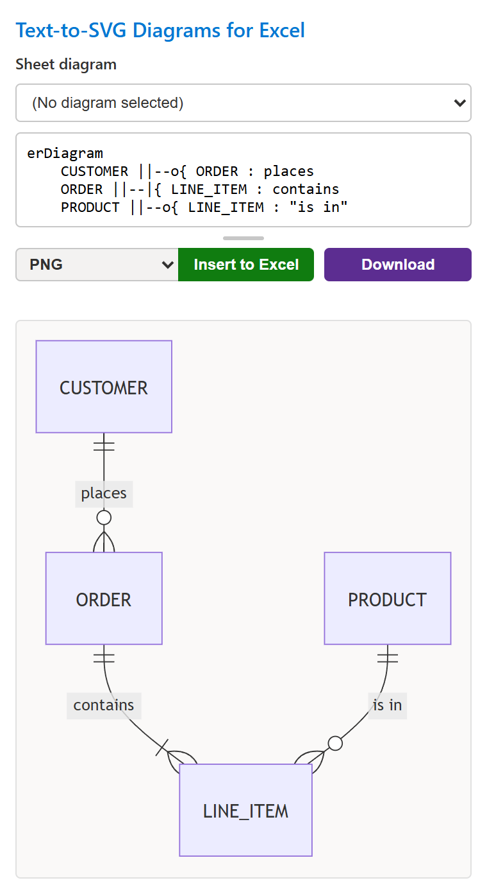
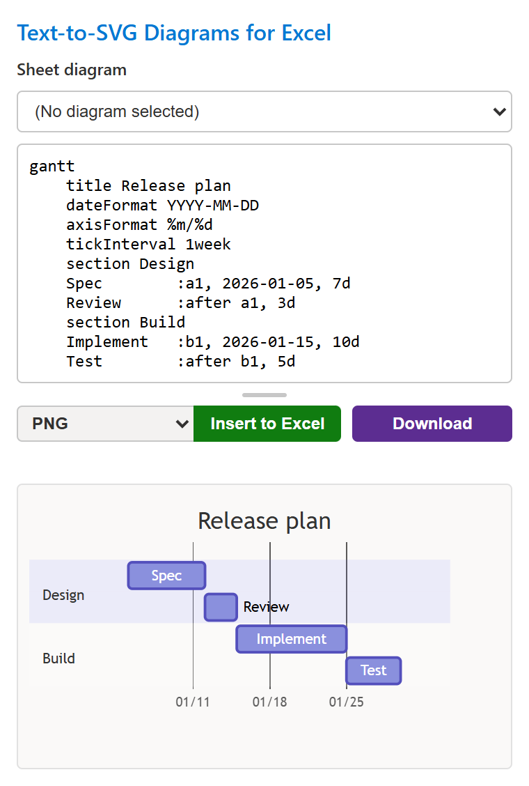
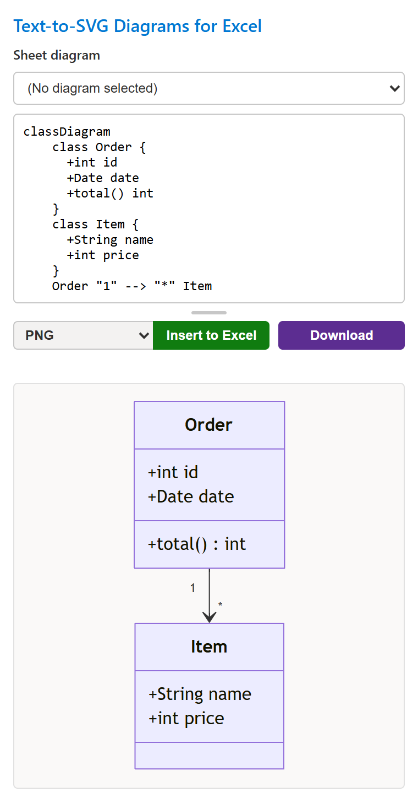
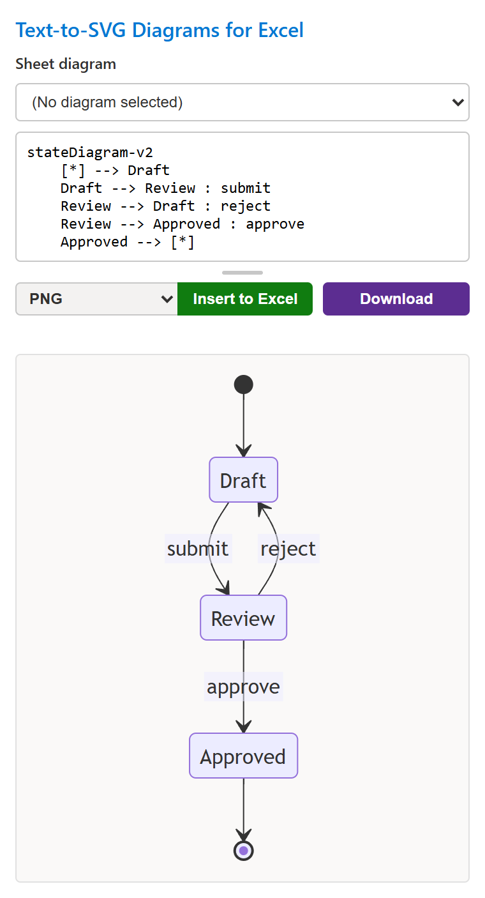
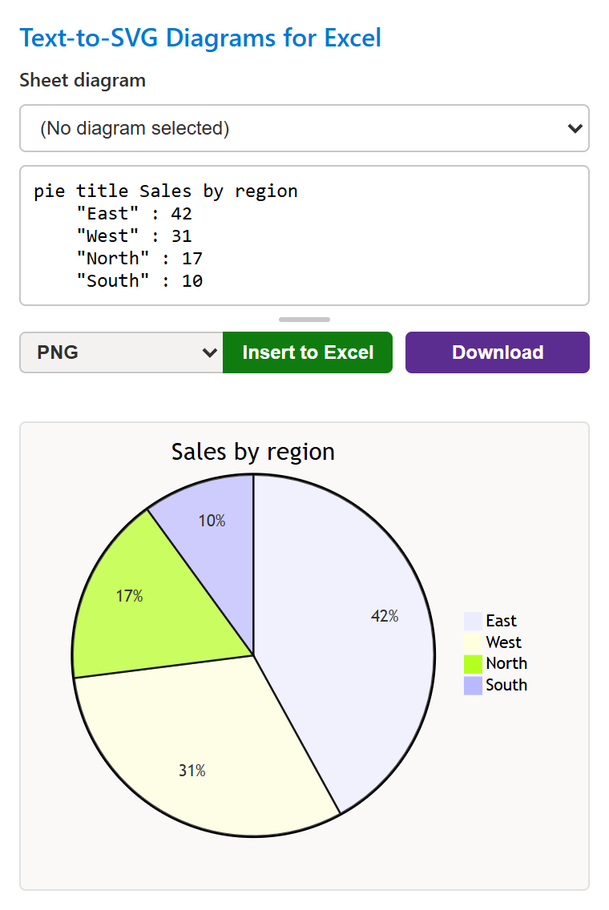
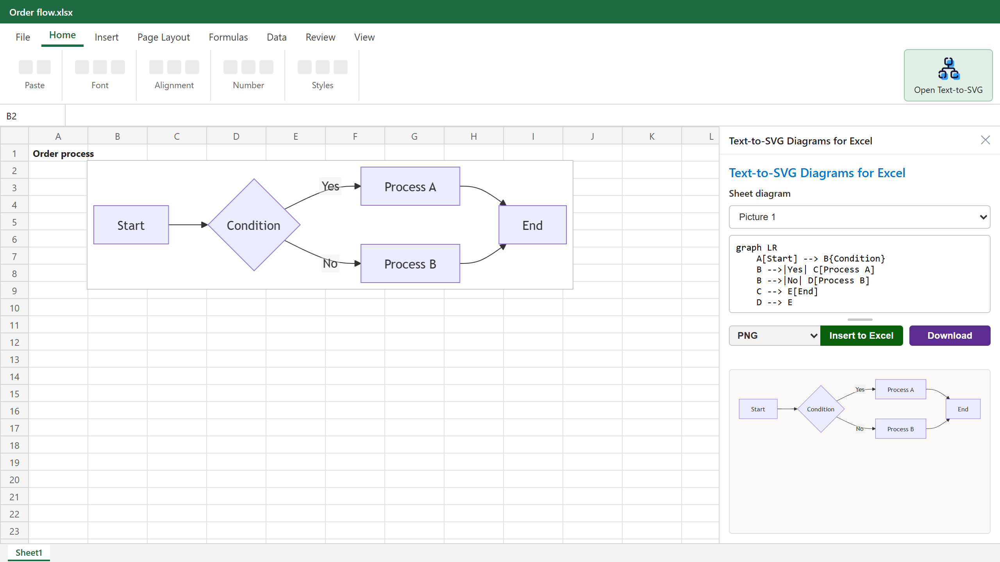

Text-to-SVG Diagrams for Excel
Mermaid 記法で書いたフローチャート・シーケンス図・ER 図などを、そのまま Excel のシートに画像として挿入できる Office アドインです。処理はすべてローカルで完結します。 An Office Add-in that turns Mermaid text into flowcharts, sequence diagrams, ER diagrams and more, and inserts them into your Excel sheet as images. Everything runs locally.

[Open Text-to-SVG] でタスクペインを開き、コードを書いて [Insert to Excel]。 Open the task pane, type the code, click Insert to Excel.
主な機能Features
テキストで書いて、プレビューして、ワンクリックで挿入。 Write text, preview it, insert it with one click.
リアルタイムプレビューLive preview
入力するそばからタスクペイン内でダイアグラムを描画します。 The diagram renders in the task pane as you type.
ワンクリックで挿入One-click insert
プレビューした画像をアクティブセルの位置に挿入します。 Insert the previewed image at the active cell.
挿入後も再編集Re-edit later
Mermaid コードは図の代替テキストに保存。シート上で図を選ぶ（または [Sheet diagram] から選ぶ）だけで読み込み、編集・差し替えできます。 The code is kept in the image's alt text. Select the diagram on the sheet (or pick it from [Sheet diagram]) to load, edit and replace it.
表から図を生成Diagrams from tables
選択したセルの表から、フローチャート・ガントチャート・円グラフのコードを作ります。 Turn the selected cells into flowchart, Gantt or pie chart code.
PNG / JPEG / SVGPNG / JPEG / SVG
形式を選んで挿入、またはファイルとしてダウンロードできます。 Choose a format to insert, or download the image as a file.
編集できる図形Editable shapes試験的Beta
フローチャートを Excel の図形とコネクタで挿入。アドインがない人も図を直せます。 Insert flowcharts as Excel shapes and connectors, so people without the add-in can edit them too.
あらゆる図に対応Every diagram type
フローチャート、シーケンス図、クラス図、ER 図、ガントチャートなど Mermaid の全記法が使えます。 Flowcharts, sequence, class, ER, Gantt and every other Mermaid diagram.
データは外に出ないStays on your PC
描画も挿入もタスクペイン内で完結。入力内容は送信されません。 Rendering and inserting happen in the task pane. Nothing you type is sent anywhere.
Web 版でもデスクトップ版でもWeb and desktop
Excel for the web と Windows 版 Excel の両方で使えます。 Works in Excel for the web and Excel on Windows.
挿入したあとも、コードで直せるFix it later, in code
挿入した図には Mermaid コードが代替テキストとして保存されます。シート上で図を選択するか [Sheet diagram] で図を選ぶとコードが読み込まれ、書き換えて [Insert to Excel] を押すと同じ位置の図が差し替わります。 Each inserted diagram keeps its Mermaid code in its alt text. Select the diagram on the sheet or pick it in Sheet diagram, edit the code and click Insert to Excel; the diagram is replaced in place.
ブックを渡した相手も、アドインがあれば同じように編集できます。 Anyone you share the workbook with can do the same if they have the add-in.

いろいろな図が書けるMany kinds of diagrams
タスクペインの実際の画面です。どれも数行のテキストで書けます。 Real task pane screenshots. Each one is a few lines of text.






挿入形式Output formats
[Insert to Excel] の左のリストで選びます。迷ったら PNG で大丈夫です。 Choose in the list next to Insert to Excel. If unsure, PNG is fine.
| 形式Format | 向いている用途Best for | ダウンロードDownload |
|---|---|---|
| PNG | どの環境でもきれいに表示。既定の形式です。Looks right everywhere. The default. | ✓ |
| JPEG | ファイルサイズを抑えたいとき。背景は白になります。Smaller files. The background becomes white. | ✓ |
| SVG | 拡大しても粗くならないベクター画像。SVG の挿入に対応した Excel が必要です。Vector image that stays sharp when zoomed. Needs an Excel version that supports SVG insertion. | ✓ |
| SVG (for shape conversion)試験的Beta | Excel の [図形に変換] 用に整えた SVG。変換後は文字や色を Excel で直接編集できます。SVG tidied up for Excel's Convert to Shape. After converting, edit text and colors directly in Excel. | ✓ |
| Shapes (editable)試験的Beta | フローチャートを Excel の図形とコネクタで挿入。図形を動かすと線もついてきます。フローチャート専用です。Inserts a flowchart as Excel shapes and connectors; lines follow when you move shapes. Flowcharts only. | — |
導入方法Install
マニフェストファイル（manifest.xml）を Excel に登録するだけで使えます。お使いの環境に合わせて方法を選んでください。
Register the manifest file (manifest.xml) with Excel. Pick the method
that fits your setup.
マニフェストをアップロードUpload the manifest
Excel for the web / Microsoft 365 版 Excel Excel for the web / Excel for Microsoft 365
- マニフェストをダウンロードします。 Download the manifest.
-
Excel でブックを開き、[挿入] → [アドイン] → [個人用アドイン] を開きます。
In Excel, open a workbook and go to Insert → Add-ins → My Add-ins.
- 表示がない場合は [ホーム] → [アドイン] → [その他のアドイン] から開きます。 If it's not there, use Home → Add-ins → More Add-ins.
-
[アドインをアップロード]（または [マイ アドインのアップロード]）を選び、ダウンロードした
manifest.xmlを指定します。 Choose Upload My Add-in and select the downloadedmanifest.xml.
アップロードしたアドインは、そのアカウントやブラウザーの環境によっては後で一覧から消えることがあります。その場合は同じ手順で再度アップロードしてください。 Depending on your account or browser, an uploaded add-in may disappear from the list later. If so, upload it again the same way.
共有フォルダーカタログShared folder catalog
Windows 版 Excel（デスクトップ） Excel on Windows (desktop)
-
任意のフォルダー（例:
C:\OfficeAddIns）を作り、manifest.xml を保存します。 Create a folder (e.g.C:\OfficeAddIns) and save manifest.xml into it. -
そのフォルダーを共有します。エクスプローラーでフォルダーを右クリック → [プロパティ] → [共有] → [共有]。表示されたネットワークパス（例:
\\PC名\OfficeAddIns）を控えます。 Share the folder: right-click it in File Explorer → Properties → Sharing → Share. Note the network path shown (e.g.\\PCNAME\OfficeAddIns). - Excel で [ファイル] → [オプション] → [トラスト センター] → [トラスト センターの設定] → [信頼できるアドイン カタログ] を開きます。 In Excel, open File → Options → Trust Center → Trust Center Settings → Trusted Add-in Catalogs.
- [カタログの URL] に共有パスを入力して [カタログの追加]。[メニューに表示する] にチェックを入れて OK し、Excel を再起動します。 Enter the share path in Catalog Url, click Add catalog, check Show in Menu, click OK and restart Excel.
- [ホーム] → [アドイン] → [その他のアドイン] → [共有フォルダー] から Text-to-SVG Diagrams for Excel を選んで [追加]。 Go to Home → Add-ins → More Add-ins → Shared Folder, select Text-to-SVG Diagrams for Excel and click Add.
登録できたらOnce it's registered
[ホーム] タブの右端に [Open Text-to-SVG] ボタンが追加されます。クリックするとタスクペインが開きます。 An Open Text-to-SVG button appears at the right end of the Home tab. Click it to open the task pane.
使い方How to use
記法の詳細は Mermaid の公式ドキュメント を参照してください。 See the Mermaid documentation for the syntax.
- 図を挿入したいセルを選択し、[Open Text-to-SVG] でタスクペインを開きます。 Select the cell where the diagram should go and click Open Text-to-SVG.
- 入力欄に Mermaid コードを書くと、下にプレビューが表示されます。 Type Mermaid code in the editor; the preview appears below it.
- ひな形から始めるときは、[New from template] で図の種類を選び [Use]。 To start from a template, pick a diagram type in New from template and click Use.
- 表から作るときは、セル範囲を選択して種類を選び [Generate]。コードが入力欄に入ります。 To start from a table, select the cells, pick a diagram type and click Generate; the code goes into the editor.
- 形式（PNG / JPEG / SVG）を選んで [Insert to Excel]。ファイルとして保存するときは [Download]。 Pick a format (PNG / JPEG / SVG) and click Insert to Excel, or Download to save it as a file.
- あとで直すときはシート上で図を選択するか、[Sheet diagram] から図を選ぶとコードが読み込まれ、編集して差し替えられます。 To change it later, select the diagram on the sheet or pick it in Sheet diagram; its code loads back in so you can edit and replace it.

よくある質問FAQ
解決しないときは GitHub Issues へどうぞ。 Still stuck? Ask on GitHub Issues.
インターネット接続は必要ですか？Do I need an internet connection?
アドイン本体（HTML / JavaScript）をこのサイトから読み込むため、タスクペインを開くときは接続が必要です。入力したコードや図はどこにも送信されません。Yes, to load the add-in itself (HTML / JavaScript) from this site when the task pane opens. Your code and diagrams are never sent anywhere.
SVG を選ぶとエラーになります。Inserting SVG fails.
お使いの Excel が SVG の挿入（ImageCoercion 1.2）に対応していません。PNG か JPEG を選んでください。Your Excel version doesn't support SVG insertion (ImageCoercion 1.2). Use PNG or JPEG instead.
Shapes (editable) で「flowcharts only」と表示されます。Shapes (editable) says "flowcharts only".
この形式はフローチャート（graph / flowchart）専用です。ほかの図は PNG などで挿入してください。That format supports flowcharts (graph / flowchart) only. Insert other diagrams as PNG or another image format.
[Sheet diagram] に図が出てきません。シート上で図を選んでもコードが読み込まれません。My diagram isn't listed in Sheet diagram, or selecting it on the sheet doesn't load its code.
一覧に出る図、シート上で選んで読み込める図は、アクティブなシート上でこのアドインが挿入した図だけです。図のあるシートを開いてから、リストをもう一度開いてください。代替テキストのタイトル（Mermaid Diagram）を書き換えた図は対象外になります。Only diagrams this add-in inserted on the active sheet are listed and load when selected on the sheet. Switch to that sheet and open the list again. Diagrams whose alt text title (Mermaid Diagram) was changed are not included.
表からコードを作るには、どんな表にすればよいですか？How should my table look to generate code?
フローチャートは「親 | 子 | ラベル」、ガントチャートは「タスク | 開始日 | 終了日または日数 | セクション」、円グラフは「項目 | 値」の順に列を並べます。Auto では 2 列目が日付ならガントチャート、数値なら円グラフになります。ガントチャートと円グラフでは 1 行目の見出しは自動で読み飛ばしますが、フローチャートでは見出しもノードになるので、データ行だけを選択してください。Use the columns parent | child | label for a flowchart, task | start | end or days | section for a Gantt chart, and label | value for a pie chart. Auto picks Gantt when the second column holds dates and pie when it holds numbers. A header row is skipped for Gantt and pie charts, but a flowchart turns it into nodes, so select the data rows only.
旧名「Mermaid for Excel」から移行するには？How do I move from "Mermaid for Excel"?
移行手順を参照してください。See the migration guide.
プライバシーPrivacy
Text-to-SVG Diagrams for Excel は個人情報やデータを一切収集しません。 Text-to-SVG Diagrams for Excel does not collect any personal information or data.
- 入力した Mermaid コードの処理とダイアグラムの描画は、タスクペイン内だけで行います。 Your Mermaid code is processed and rendered only inside the task pane.
- シートへの画像挿入は Office JavaScript API を通じてローカルで行います。 Images are inserted locally through the Office JavaScript API.
- 表からコードを作るときに読み込むセルの値は、タスクペイン内でコードの生成にだけ使います。 Cell values read to generate code from a table are used only to build the code inside the task pane.
- 通信はアドイン本体（HTML / JavaScript）をこのサイトから読み込むときだけで、ユーザーのデータは含みません。 The only network traffic is loading the add-in itself (HTML / JavaScript) from this site, and it contains none of your data.
- Cookie、ローカルストレージ、トラッキング技術は使いません。 No cookies, local storage or tracking technologies are used.